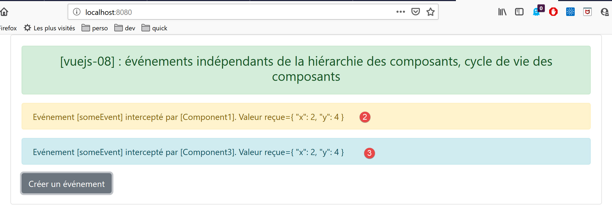

10. projet [vuejs-08] : événements indépendants de la hiérarchie des composants, cycle de vie des composants
Le projet [vuejs-08] lontre comment des composants non reliés directement dans la hiérarchie des composants peuvent néanmoins communiquer via des événements. L’arborescence du projet [vuejs-08] est la suivante :

10.1. Le script principal [main.js]
Le script [main.js] reste ce qu’il était dans les exemples précédents.
10.2. Le script [even-bus.js]
Le script [event-bus.js] est l’outil que nous allons utiliser pour émettre et écouter des événements :
import Vue from 'vue';
const eventBus = new Vue();
export default eventBus;
Le script [event-bus] se contente de créer une instance de la classe [Vue] (lignes 1-2) et de l’exporter (ligne 3). La classe [Vue] possède deux méthodes pour gérer les événements :
- [Vue].$emit(nom, donnée) : permet d’émettre un événement nommé [nom] et associé à la donnée [donnée] ;
- [Vue].$on(nom, fn) : permet d’intercepter l’événement nommé [nom] et de le faire traiter par la fonction [fn]. La fonction [fn] recevra en paramètre la donnée [donnée] associée à l’événement par son émetteur ;
Cette gestion d’événements n’est pas liée à la hiérarchie des composants. Il faut simplement que les composants qui veulent communiquer ainsi utilisent la même instance de la classe [Vue] pour émettre / écouter les événements. Dans notre exemple, nous utiliserons l’instance [eventBus] définie par le script [event-bus.js] précédent.
10.3. La vue principale [App.vue]
Le code de la vue principale [App] est le suivant :
<template>
<div class="container">
<b-card>
<b-alert show variant="success" align="center">
<h4>[vuejs-08] : événements indépendants de la hiérarchie des composants, cycle de vie des composants</h4>
</b-alert>
<!-- les trois composants qui communiquent par évt -->
<Component1 />
<Component3 />
<Component2 />
</b-card>
</div>
</template>
<script>
import Component1 from "./components/Component1";
import Component2 from "./components/Component2";
import Component3 from "./components/Component3";
export default {
name: "app",
// composants
components: {
Component1,
Component2,
Component3
}
};
</script>
- lignes 8-10 : la vue principale [App] utilise trois composants [Component1, Component2, Component3] qui vont communiquer par événements. Les trois composants sont au même niveau dans la vue [App]. De plus, il n’y aura pas de relation de hiérarchie entre eux ;
10.4. Le composant [Component1]
Le code du composant [Component1] est le suivant :
<template>
<b-row>
<b-col>
<b-alert show
variant="warning"
v-if="showMsg">Evénement [someEvent] intercepté par [Component1]. Valeur reçue={{data}}</b-alert>
</b-col>
</b-row>
</template>
<script>
import eventBus from "../event-bus.js"
export default {
name: "component1",
// état du composant
data() {
return {
data: "",
showMsg: false
};
},
// méthodes de gestion des évts
methods: {
// gestion de l'evt [someEvent]
doSomething(data) {
this.data = data;
this.showMsg = true;
}
},
// gestion du cycle de vie du composant
// évt [created] - le composant a été créé
created() {
// écoute de l'évt [someEvent]
eventBus.$on("someEvent", this.doSomething);
}
};
</script>
Commentaires
- lignes 4-6 : une alerte qui affiche la donnée [data] de la ligne 18. Cette donnée sera initialisée par le gestionnaire d’événement [doSomething] de la ligne 25. Ce gestionnaire est activé à réception de l’événement [someEvent] (ligne 34). L’alerte est affichée conditionnellement à la valeur de l’attribut [showMsg] de la ligne 19. Cet attribut est lui également positionné par le gestionnaire d’événement [doSomething] de la ligne 25 ;
- ligne 32 : la fonction [created] est un gestionnaire d’événement. Elle gère l’événement [created], un événement émis au cours du cycle de vie du composant. Il en existe d’autres [beforeCreate, created, beforeMount, mounted, beforeUpdate, updated, beforeDestroy, destroyed]. L’événement [created] est émis lorsque le composant a été créé ;
- ligne 12 : l’instance [eventBus] de la classe [Vue] est importée ;
- ligne 34 : elle est utilisée pour écouter l’événement [someEvent]. Lorsque celui-ci se produit, la méthode [doSomething] de la ligne 25 est appelée ;
- ligne 25 : la méthode [doSomething] reçoit comme paramètre [data] la donnée que l’émetteur de l’événement [someEvent] a associée à l’événement ;
- lignes 26-27 : l’état du composant est modifié pour que l’alerte des lignes 4-6 affiche la donnée reçue ;
10.5. Le composant [Component2]
Le composant [Component2] est le suivant :
<template>
<div>
<b-button @click="createEvent">Créer un événement</b-button>
</div>
</template>
<!-- script -->
<script>
import eventBus from '../event-bus.js'
export default {
name: "component2",
// méthodes de gestion des évts
methods: {
createEvent() {
eventBus.$emit("someEvent", { x: 2, y: 4 })
}
}
};
</script>
Commentaires
- ligne 3 : un bouton pour créer un événement. Lorsque l’utilisateur clique sur ce bouton, la méthode [createEvent] de la ligne 13 est appelée ;
- ligne 8 : l’instance [eventBus] définie par le script [event-bus.js] est importée ;
- ligne 14 : cette instance est utilisée pour émettre un événement nommé [someEvent] associé à la donnée [{ x: 2, y: 4 }]. Au final, lorsque l’utilisateur clique sur le bouton de la ligne 3, l’événement [someEvent] est émis. Si on se rappelle la définition de [Component1], celui-ci interceptera cet événement ;
10.6. Le composant [Component3]
Le code de ce composant est le suivant :
<template>
<b-row>
<b-col>
<b-alert show
v-if="showMsg">Evénement [someEvent] intercepté par [Component3]. Valeur reçue={{data}}</b-alert>
</b-col>
</b-row>
</template>
<script>
import eventBus from "../event-bus.js"
export default {
name: "component3",
// état du composant
data() {
return {
data: "",
showMsg: false
};
},
methods: {
// gestion de l'evt [someEvent]
doSomething(data) {
this.data = data;
this.showMsg = true;
}
},
// gestion du cycle de vie du composant
// évt [created] - le composant a été créé
created() {
// écoute de l'évt [someEvent]
eventBus.$on("someEvent", this.doSomething);
}
};
</script>
[Component3] est un clone de [Component1]. Il n’est là que pour montrer qu’un événement peut être intercepté par plusieurs composants.
10.7. Exécution du projet [vuejs-08]


